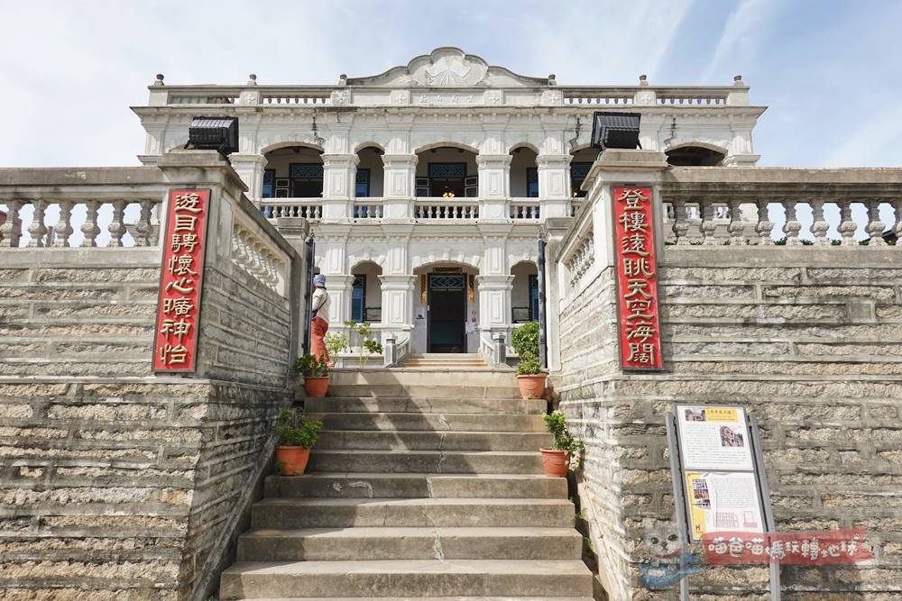
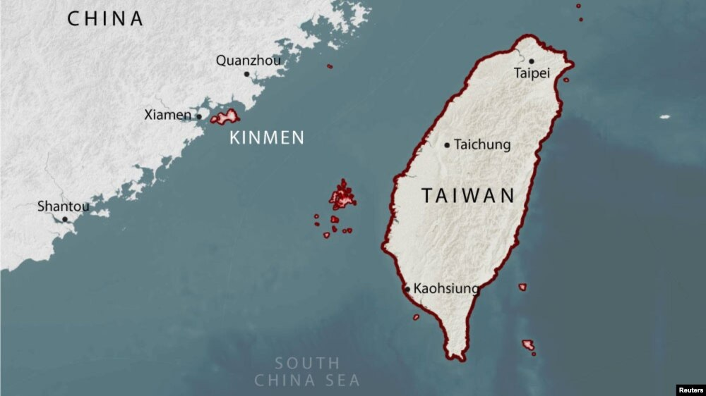
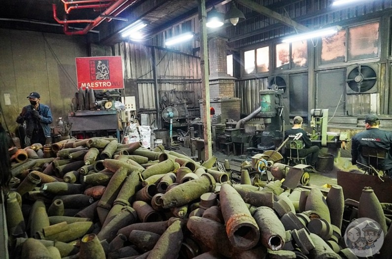
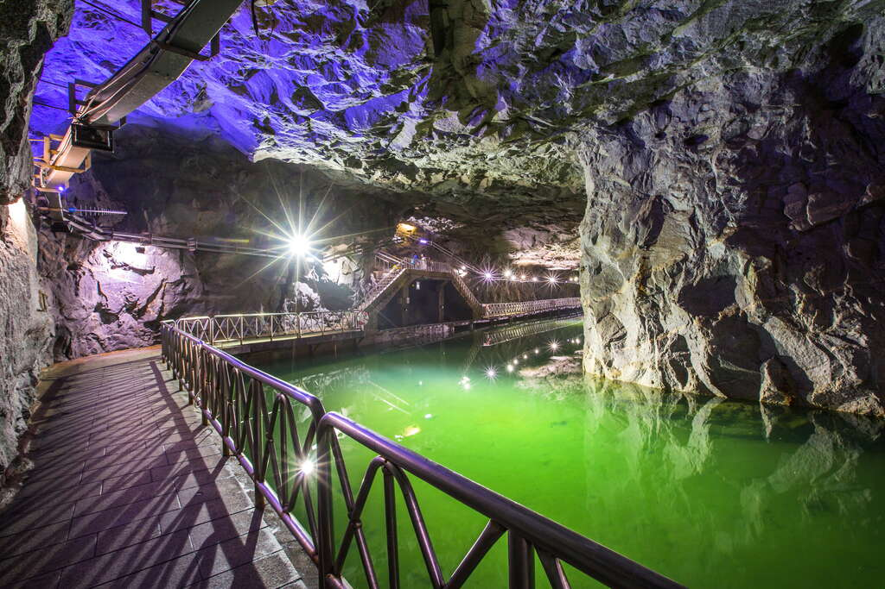
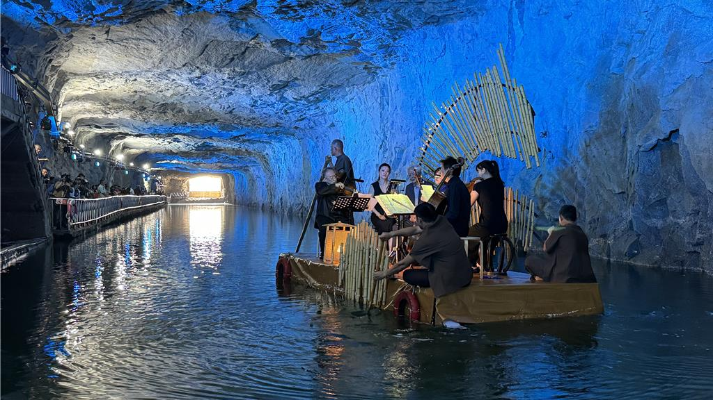
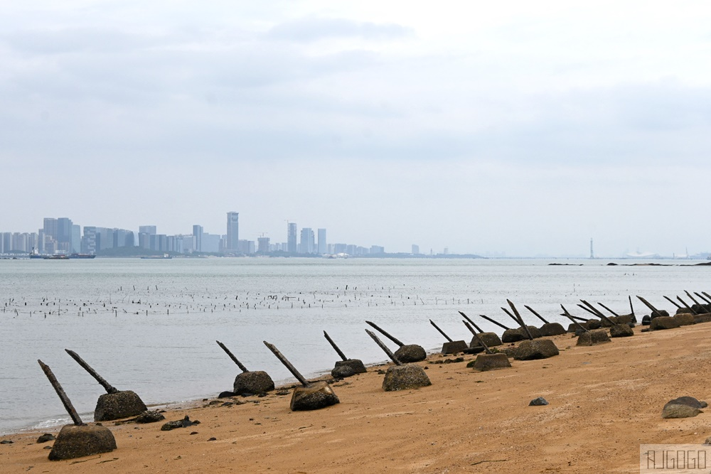
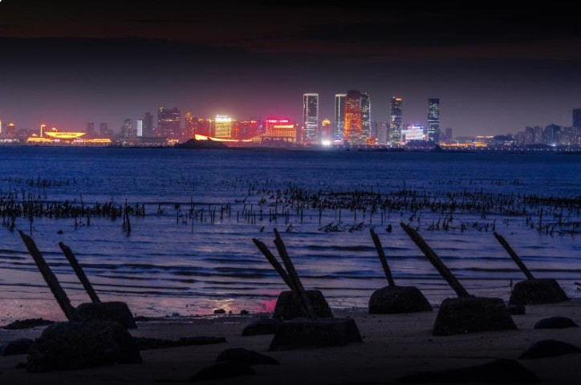
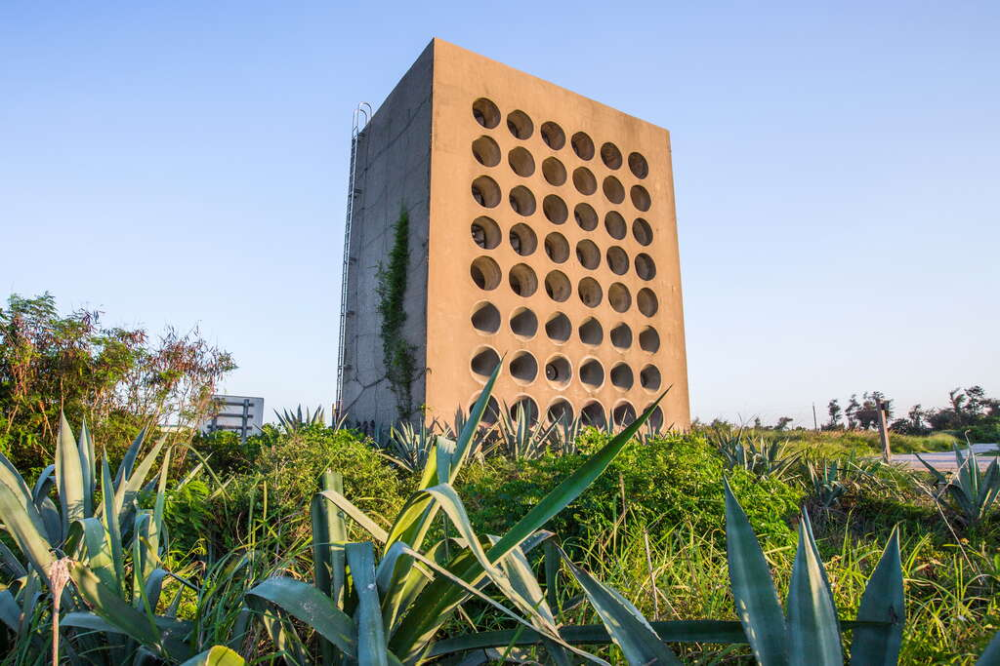
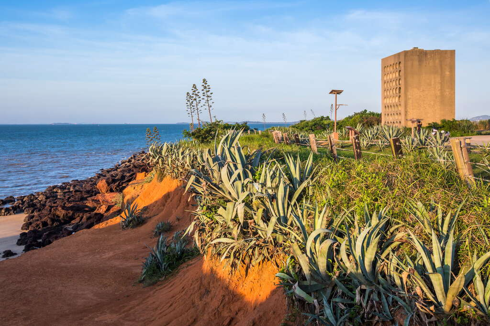
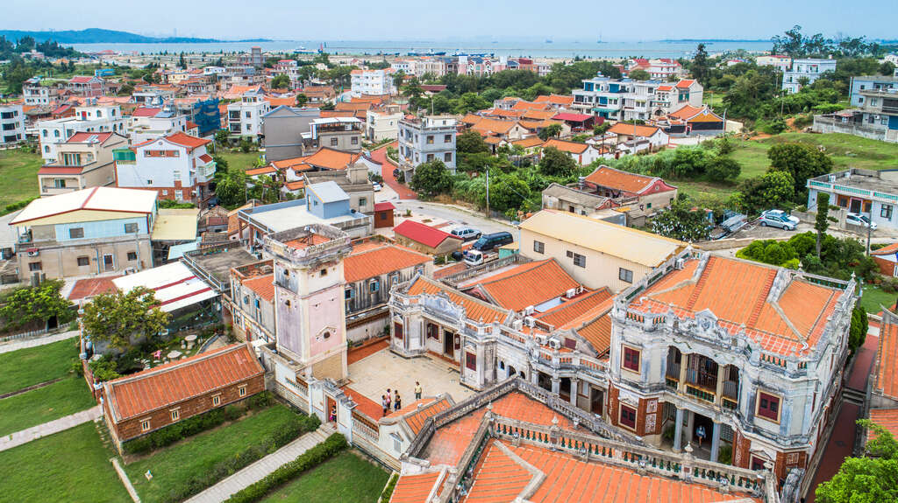

穿越冷戰前線與百年洋樓，探索亞洲最傳奇的隱藏秘境。
Cruza la última frontera de la Guerra Fría y descubre palacios centenarios en el secreto mejor guardado de Asia.

19世紀的金門人遠渡重洋到東南亞打拼，致富後返鄉建造了融合西方殖民與東方傳統的「中西合璧洋樓」。

1958年8月23日，中共解放軍對金門發動大規模砲擊。僅最初兩小時，數萬發砲彈密集落下，砲火覆蓋軍事陣地、港口、道路與聚落；隨後更以持續砲擊與海上封鎖，企圖切斷補給，使守軍在孤立無援中屈服。
金門距離中國大陸最近處僅數公里，幾乎就在敵軍砲口之下。島上軍民無法後退，只能一面作戰、一面在砲火中生存。為了保存兵力、維持指揮與作戰能力，他們深入堅硬的花崗岩層，開鑿坑道、地下指揮所、彈藥庫、醫療與補給設施，逐步將整座島嶼打造為一座能在猛烈砲擊下持續作戰的地下要塞。
A solo unos kilómetros de China continental, Kinmen estaba directamente bajo el fuego enemigo. Sin lugar para retirarse, militares y civiles resistieron y excavaron profundamente en el granito, construyendo túneles, puestos de mando y otras instalaciones militares.
Así nació una enorme fortaleza subterránea, símbolo de una isla que sobrevivió al fuego y se mantuvo firme en la primera línea de la Guerra Fría.

今天，反坦克鐵絲網旁是成群的候鳥，致命的砲彈被打造享譽國際的「金門鋼刀」。金門已蛻變為和平之島。


完全在堅硬花崗岩中用雙手與炸藥開鑿出的地下水路。在過去用來隱蔽小艇補給，如今坑道內的光影宛如天然的巨型音樂廳，是震撼人心的地下工程奇蹟。


這裡是金門距離中國大陸最近的海灘之一，僅隔著 6 公里的海域。沙灘上至今仍整齊排列著「軌條砦」（反登陸鐵刺），是用來阻止敵軍戰船上岸的鐵血防線。在這裡，你一抬頭就能無比清晰地看見對岸繁華的摩天大樓，冷戰對峙的震撼感就在眼前！


正面對著中國大陸、高達三層樓的巨大的石牆。牆面上整齊排列著 48 個巨型喇叭，這是冷戰時期用來對敵軍進行「心理戰補給」與喊話的巨型聲音武器，聲音可遠傳 25 公里！

雖然它是一棟漂亮的洋樓，但它本質上也是一座「戰鬥建築」！建於公元1931年，是當時水頭聚落最高的建築，當時富商為了對抗強盜海盜，將高聳的得月樓蓋滿了槍眼、機關與假門偽裝，是中西混血的精美防禦碉堡。